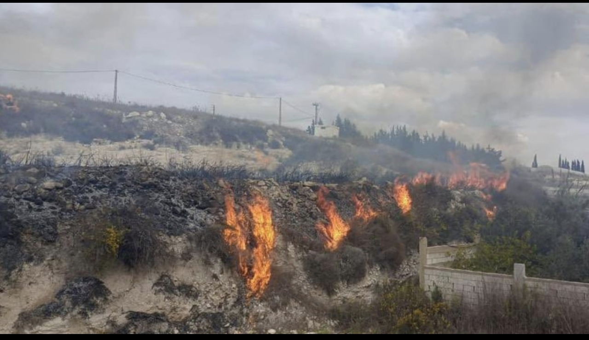

Depuis octobre 2023 et jusqu’à l’escalade de mars 2026, le sud du Liban continue de subir des destructions environnementales documentées par plusieurs organismes internationaux et locaux. Forêts, terres agricoles, sols et eaux ont été touchés. À ce jour (septembre 2026), malgré la signature par le Liban et Israël d’un accord-cadre sous parrainage américain le 26 juin 2026, des raids et des explosions israéliens se poursuivent dans les zones frontalières du Sud.
Phosphore blanc : des faits documentés à l’échelle internationale
Human Rights Watch a documenté l’emploi de munitions au phosphore blanc par l’armée israélienne dans au moins 17 localités du sud du Liban. Selon les données réunies par le chercheur libanais Ahmad Baydoun avec le groupe « Al-Janoubiyyun al-Khudr » (« Les Verts du Sud »), plus de 918 hectares ont été endommagés lors de 191 attaques documentées au phosphore blanc entre octobre 2023 et le cessez-le-feu de novembre 2024. Amnesty International a établi qu’Israël avait commencé à utiliser du phosphore blanc au Liban entre le 10 et le 16 octobre 2023. Son utilisation dans des zones peuplées contrevient au Protocole III de la Convention sur certaines armes classiques.
Sur le plan scientifique, le Conseil national de la recherche scientifique du Liban estime qu’au moins 2 000 hectares de forêts, d’oliveraies, de vergers d’agrumes et de terres agricoles ont été partiellement détruits par le phosphore blanc. Parmi les pertes figure le bois historique de Horj al-Rahib, une chênaie de 16 hectares à la lisière d’Aïta el-Chaab. Dans un rapport détaillé, le Conflict and Environment Observatory (CEOBS) a également recensé l’emploi par Israël de munitions au phosphore blanc qui ont provoqué de vastes incendies dans les terres agricoles, détruisant la végétation et dégradant durablement les sols et les eaux.

Les oiseaux migrateurs pris dans la zone des combats
Le Liban se trouve sur l’un des plus importants corridors migratoires du monde. Il constitue la deuxième voie de migration majeure pour les oiseaux entre l’Europe, le Moyen-Orient, l’Asie et l’Afrique, également appelée voie afro-eurasienne ou voie de la Méditerranée orientale. Des millions d’oiseaux appartenant à plus de 400 espèces y passent entre leurs sites de reproduction d’Europe centrale et orientale et leurs quartiers d’hiver d’Afrique centrale et orientale, notamment la cigogne blanche, l’aigle pomarin et les pélicans.
Une étude spécialisée publiée en 2026 dans la revue Environment and Security conclut que la guerre des drones engendre des « risques environnementaux à plusieurs niveaux », dont les nuisances sonores, la pollution par les débris électroniques et le stress comportemental chez les animaux sauvages, en particulier les oiseaux. Selon cette étude, les oiseaux peuvent interpréter le bruit d’un drone comme celui d’un prédateur aérien, ce qui peut provoquer des envols de panique, perturber leur alimentation ou les pousser à abandonner leurs nids.
Plus grave encore, l’Union internationale pour la conservation de la nature (UICN) a confirmé dans son évaluation de 2025 l’extinction mondiale du courlis à bec grêle (Numenius tenuirostris), l’une des premières extinctions officiellement constatées d’une espèce d’oiseau migrateur. Cet oiseau faisait partie des espèces qui empruntaient notamment le corridor du sud du Liban. L’UICN avertit que les migrateurs subissent déjà des pressions cumulées : perte des habitats, urbanisation, pesticides et changement climatique, auxquelles s’ajoute la situation des zones de conflit contaminées par le phosphore blanc et les métaux lourds.
En octobre 2025, lors du Congrès mondial de la nature de l’UICN à Abou Dhabi, les membres ont adopté une résolution demandant la restauration des écosystèmes endommagés du Liban. Elle reconnaît une dégradation environnementale étendue, comprenant la pollution des sols et de l’eau, la disparition du couvert végétal, l’érosion, les risques d’incendie et la menace qui pèse sur la continuité écologique entre les habitats.